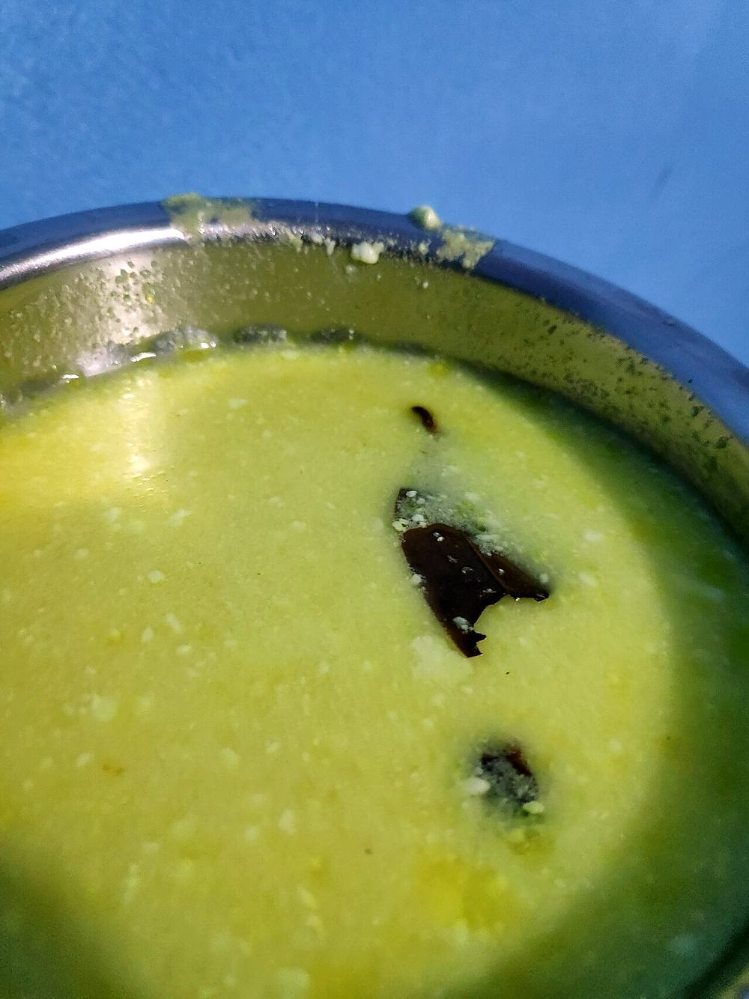

Prep30 min
Cook40 min
Active70 min
Plus15 min chilling
Serves4
Difficultymoderate
Contains: milk, tree nuts
Checked against the ingredient list for ten allergens: milk, egg, fish, crustaceans, tree nuts, peanuts, sesame, mustard, soy and gluten. Brands vary, so read the label on anything new to you.
Ingredients
Quantities for 4.
- 200g, sieved Besanthe gatta dough
- 2 tbsp thick, for the dough plus 250g whisked for the gravy Yogurt
- 1/2 tsp, crushed between the palms Ajwain
- 1/8 tsp Baking Sodakeeps the gatte from turning rubberyoptional
- 60g, crumbled Khoyathe stuffing
- 12, chopped fine Cashew
- 1 tbsp, chopped Raisins
- 1 tbsp, grated Dried Coconutoptional
- 1/4 tsp, coarsely cracked Black Pepperfor the stuffing
- 1 large, ground to a paste Onion
- 1 tbsp, grated Ginger
- 5 cloves, crushed Garlic
- 4 tbsp Neutral Oil
- 2 tbsp Gheefor finishing
- 1 tsp Cumin Seeds
- 1/4 tsp Asafoetidause compounded-free hing to keep this gluten-free
- 2 tsp Kashmiri Chillifor colour without heat
- 2 tsp Coriander Powder
- 1/2 tsp Turmeric
- 3/4 tsp Garam Masala
- 1 tsp, crushed Kasuri Methioptional
- 2 tbsp, chopped Coriander Leavesoptional
- to taste Salt
- 1.2 litres for boiling, plus 300ml for the gravy Water
Cookware
stovetop, kadhai
Before you start
- Take the yogurt out of the fridge an hour ahead. Cold yogurt splits the moment it meets a hot pan.
- Mix the stuffing first and chill it 15 minutes. A firm filling is far easier to seal inside the dough.
- The gatta dough should be stiff, like a puri dough. Wet dough will not hold a stuffing.
Method
- Rub the besan with 2 tbsp oil, the thick yogurt, ajwain, baking soda, 1/4 tsp turmeric and salt until it looks like coarse crumbs, then bring it together with a tablespoon or two of water into a stiff dough. Knead 2 minutes and rest 10 minutes.Add water a teaspoon at a time. Besan takes up far less than you expect.
- Mash the khoya with the cashew, raisins, dried coconut, cracked pepper and a pinch of salt into a coarse, sticky filling. Chill it.
- Divide the dough into 8. Flatten each into a 7cm disc on your palm, place a teaspoon of filling in the centre, draw the edges over and roll into a smooth cylinder about 5cm long. Seal any cracks with a wet fingertip.A cracked gatta leaks its stuffing into the boiling water and collapses.
- Lower the cylinders into 1.2 litres of gently boiling salted water. Cook 12 minutes. They will bob to the surface and firm up. Lift out, cool 5 minutes, then cut each into 3 thick pieces. Keep 300ml of the cooking water.
- Fry the pieces in the remaining 2 tbsp oil over medium heat, turning, until they are freckled gold on the cut faces, about 4 minutes. Set aside.
- In the same kadhai heat the ghee, crackle the cumin, add the hing, and one second later the onion paste. Cook 8 minutes until it stops smelling raw and pulls away from the pan.
- Add the ginger and garlic and fry 2 minutes, then the kashmiri chilli, coriander powder and remaining turmeric with a splash of water. Bhuno until the oil separates and rims the masala, about 4 minutes.
- Take the pan off the heat, wait 30 seconds, then pour in the whisked yogurt in a thin stream, stirring constantly. Return to low heat and keep stirring until it comes to a bare simmer.Off the heat, thin stream, constant stirring. This is the only place this dish goes wrong.
- Add the reserved cooking water, salt and the fried gatte. Simmer uncovered 10 minutes until the gravy coats a spoon and darkens.
- Finish with garam masala and crushed kasuri methi, rest 5 minutes off the heat, and scatter coriander over. Serve with plain phulka or rice.
Storage
Keeps 2 days refrigerated; the gatte drink up the gravy, so loosen with hot water when reheating. Do not freeze. The yogurt gravy turns grainy.
Nutrition Good estimate
Medium protein: 20 g a serving, 14% of the calories
| Per serving214 g | Per 100 g | |
|---|---|---|
| Calories | 563 kcal | 264 kcal |
| Protein | 19.5 g | 9 g |
| Carbohydrate | 50.5 g | 24 g |
| of which sugars | 18.8 g | 9 g |
| Fibre | 8.9 g | 4 g |
| Fat | 32.7 g | 15 g |
| of which saturated | 11.8 g | 6 g |
| of which unsaturated | 18.5 g | 9 g |
Nearest database match used for asafoetida, garam masala. Estimated from raw ingredients using USDA FoodData Central.
Times, yields, allergens and nutrition are guidance. Use your own judgement on doneness and on storing. More in About.